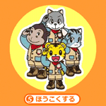

<!-- main -->
<div id="main">

  
  <div id="kyouzai">
  <h3>おてつだいたいに ほうこくしよう!</h3>
  
  <p>お手伝いプログラム「しまじろうの　おてつだいたい」の活動の一環として、お手伝いをしたことを電話でおてつだいたいに報告するコンテンツです。しまじろうたちメンバーからの応援メッセージを聞くことができます。メッセージを話すメンバーは交代で出てくるのでお楽しみに。</p>
<p>■遊び方<br />
「きみはどんなお手伝いをしたの？」というメッセージをなげかけてお子さんが自分がやったお手伝いを言うように促ます。言い終えたら、「ほうこくする」ボタンをタッチして次に進みます。<br />
※音声つきです。マナーモードを解除してお使いください。</p>
<div><a href="src/otetsudaitai_android.swf" data-role="button" data-theme="e" rel="external">ダウンロード</a></div>
  </div>
 
  
</div>
<!-- /main -->
